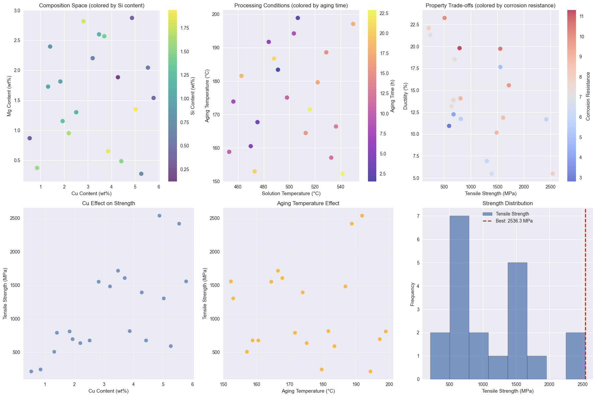
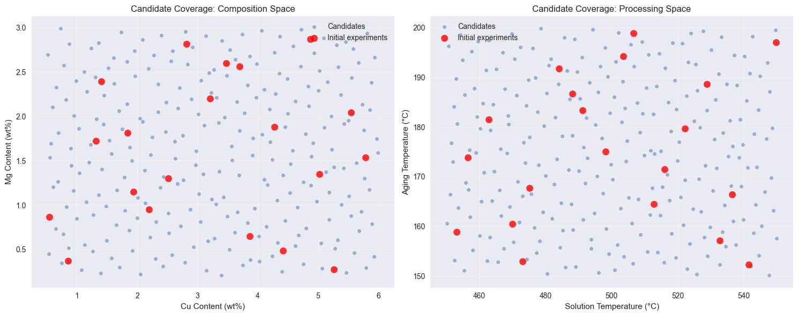

Alloy Composition Optimization#
This notebook demonstrates how to use Bgolearn for optimizing alloy compositions to achieve desired material properties.
Learning Objectives#
Apply Bayesian optimization to materials discovery
Handle composition constraints (sum to 1)
Optimize multiple properties simultaneously
Visualize materials property relationships
Design parallel experiments for synthesis
Problem: High-Strength Aluminum Alloy#
We want to design a new aluminum alloy with maximum tensile strength while maintaining reasonable ductility and corrosion resistance.
import numpy as np
import pandas as pd
import matplotlib.pyplot as plt
import seaborn as sns
# import bgolearn as bgo # Commented out for documentation build
# from bgolearn.visualization import BgolearnVisualizer
# Set style for better plots
try:
plt.style.use('seaborn-v0_8')
except:
plt.style.use('seaborn') # Fallback for older versions
np.random.seed(42)
print("Libraries imported successfully!")
print("Note: This is a demonstration notebook for documentation.")
Libraries imported successfully!
Note: This is a demonstration notebook for documentation.
Define the Materials System#
We’ll work with an Al-Cu-Mg-Si alloy system with processing parameters:
class AluminumAlloySystem:
"""
Simulates an aluminum alloy system for optimization.
Features:
- Al content (balance)
- Cu content (0.5-6.0 wt%)
- Mg content (0.2-3.0 wt%)
- Si content (0.1-2.0 wt%)
- Solution temperature (450-550°C)
- Aging temperature (150-200°C)
- Aging time (1-24 hours)
Properties:
- Tensile strength (MPa)
- Ductility (%)
- Corrosion resistance (arbitrary units)
"""
def __init__(self):
self.feature_names = [
'Cu_content', # Copper content (wt%)
'Mg_content', # Magnesium content (wt%)
'Si_content', # Silicon content (wt%)
'Solution_temp', # Solution treatment temperature (°C)
'Aging_temp', # Aging temperature (°C)
'Aging_time' # Aging time (hours)
]
self.property_names = [
'Tensile_Strength', # MPa
'Ductility', # %
'Corrosion_Resistance' # Arbitrary units (higher is better)
]
# Define realistic ranges
self.ranges = {
'Cu_content': (0.5, 6.0),
'Mg_content': (0.2, 3.0),
'Si_content': (0.1, 2.0),
'Solution_temp': (450, 550),
'Aging_temp': (150, 200),
'Aging_time': (1, 24)
}
def calculate_properties(self, compositions_and_processing):
"""
Calculate material properties based on composition and processing.
This is a simplified model based on known metallurgical relationships.
"""
cu, mg, si, sol_temp, age_temp, age_time = compositions_and_processing.T
# Tensile strength model
# Base strength from aluminum
base_strength = 70 # Pure Al strength
# Solid solution strengthening
ss_strengthening = 50 * cu + 30 * mg + 20 * si
# Precipitation strengthening (depends on heat treatment)
sol_effect = 1 + 0.002 * (sol_temp - 500) # Optimal around 500°C
age_effect = 1 + 0.01 * (age_temp - 175) - 0.0001 * (age_temp - 175)**2
time_effect = 1 + 0.1 * np.log(age_time)
precip_strengthening = 100 * cu * mg * sol_effect * age_effect * time_effect
# Interaction effects
cu_mg_interaction = 20 * cu * mg # Beneficial interaction
si_effect = 15 * si * (cu + mg) # Si enhances other elements
tensile_strength = (base_strength + ss_strengthening + precip_strengthening +
cu_mg_interaction + si_effect +
15 * np.random.randn(len(cu)))
# Ductility model (generally trades off with strength)
base_ductility = 25 # Pure Al ductility
composition_effect = -2 * cu - 1.5 * mg - 1 * si # Alloying reduces ductility
processing_effect = 0.05 * (sol_temp - 500) - 0.02 * (age_temp - 175)
ductility = (base_ductility + composition_effect + processing_effect +
3 * np.random.randn(len(cu)))
ductility = np.maximum(ductility, 2) # Minimum ductility
# Corrosion resistance (Mg improves, Cu decreases)
base_corrosion = 7 # Al base resistance
mg_benefit = 2 * mg # Mg improves corrosion resistance
cu_penalty = -1 * cu # Cu decreases corrosion resistance
si_neutral = 0.5 * si # Si has small positive effect
corrosion_resistance = (base_corrosion + mg_benefit + cu_penalty + si_neutral +
0.5 * np.random.randn(len(cu)))
corrosion_resistance = np.maximum(corrosion_resistance, 1)
return np.column_stack([tensile_strength, ductility, corrosion_resistance])
def generate_initial_data(self, n_samples=25):
"""Generate initial experimental data using Latin Hypercube sampling."""
from scipy.stats import qmc
# Use Latin Hypercube for better space coverage
sampler = qmc.LatinHypercube(d=6, seed=42)
samples = sampler.random(n=n_samples)
# Scale to actual ranges
scaled_samples = np.zeros_like(samples)
for i, feature in enumerate(self.feature_names):
low, high = self.ranges[feature]
scaled_samples[:, i] = low + samples[:, i] * (high - low)
# Calculate properties
properties = self.calculate_properties(scaled_samples)
# Create DataFrames
features_df = pd.DataFrame(scaled_samples, columns=self.feature_names)
properties_df = pd.DataFrame(properties, columns=self.property_names)
return features_df, properties_df
# Create the alloy system
alloy_system = AluminumAlloySystem()
print("Aluminum alloy system created")
print(f"Features: {alloy_system.feature_names}")
print(f"Properties: {alloy_system.property_names}")
Aluminum alloy system created
Features: ['Cu_content', 'Mg_content', 'Si_content', 'Solution_temp', 'Aging_temp', 'Aging_time']
Properties: ['Tensile_Strength', 'Ductility', 'Corrosion_Resistance']
Generate Initial Experimental Data#
We start with a set of initial experiments using Latin Hypercube sampling for good space coverage:
# Generate initial experimental data
X_initial, y_initial = alloy_system.generate_initial_data(n_samples=20)
print(f"Initial dataset: {X_initial.shape[0]} experiments")
print(f"Features: {X_initial.shape[1]} dimensions")
print(f"Properties: {y_initial.shape[1]} objectives")
# Display summary statistics
print("\nFeature ranges in initial data:")
print(X_initial.describe())
print("\nProperty ranges in initial data:")
print(y_initial.describe())
# Find current best
best_strength_idx = y_initial['Tensile_Strength'].argmax()
best_alloy = X_initial.iloc[best_strength_idx]
best_properties = y_initial.iloc[best_strength_idx]
print(f"\nCurrent best alloy (highest strength):")
print(f"Composition: Cu={best_alloy['Cu_content']:.2f}%, Mg={best_alloy['Mg_content']:.2f}%, Si={best_alloy['Si_content']:.2f}%")
print(f"Processing: Sol={best_alloy['Solution_temp']:.0f}°C, Age={best_alloy['Aging_temp']:.0f}°C, Time={best_alloy['Aging_time']:.1f}h")
print(f"Properties: Strength={best_properties['Tensile_Strength']:.1f} MPa, Ductility={best_properties['Ductility']:.1f}%, Corrosion={best_properties['Corrosion_Resistance']:.1f}")
Initial dataset: 20 experiments
Features: 6 dimensions
Properties: 3 objectives
Feature ranges in initial data:
Cu_content Mg_content Si_content Solution_temp Aging_temp \
count 20.000000 20.000000 20.000000 20.000000 20.000000
mean 3.243654 1.593382 1.053339 500.118134 175.139856
std 1.628153 0.830570 0.568280 29.563253 14.894428
min 0.540314 0.274047 0.121019 453.147701 152.264557
25% 1.911776 0.930487 0.603930 474.634900 163.480826
50% 3.342251 1.632975 1.053692 500.910225 174.474926
75% 4.533516 2.250954 1.514636 523.833172 187.213049
max 5.787162 2.873636 1.936890 549.780981 198.907120
Aging_time
count 20.000000
mean 12.457850
std 6.843244
min 1.513384
25% 7.211166
50% 12.426197
75% 17.681925
max 22.878034
Property ranges in initial data:
Tensile_Strength Ductility Corrosion_Resistance
count 20.000000 20.000000 20.000000
mean 1112.341998 14.274463 7.456435
std 658.426855 5.351928 2.245912
min 213.799684 5.462972 2.799597
25% 667.524941 11.490805 5.902308
50% 812.827403 13.527413 7.600020
75% 1554.539272 18.824631 8.988256
max 2536.296920 23.250255 11.304139
Current best alloy (highest strength):
Composition: Cu=4.87%, Mg=2.87%, Si=0.34%
Processing: Sol=484°C, Age=192°C, Time=6.1h
Properties: Strength=2536.3 MPa, Ductility=5.5%, Corrosion=8.2
Visualize Initial Data#
Let’s explore the relationships in our initial dataset:
# Create comprehensive visualization of initial data
fig, axes = plt.subplots(2, 3, figsize=(18, 12))
# Composition triangle (Cu vs Mg, colored by Si)
scatter1 = axes[0,0].scatter(X_initial['Cu_content'], X_initial['Mg_content'],
c=X_initial['Si_content'], cmap='viridis', s=80, alpha=0.7)
axes[0,0].set_xlabel('Cu Content (wt%)')
axes[0,0].set_ylabel('Mg Content (wt%)')
axes[0,0].set_title('Composition Space (colored by Si content)')
plt.colorbar(scatter1, ax=axes[0,0], label='Si Content (wt%)')
# Processing conditions
scatter2 = axes[0,1].scatter(X_initial['Solution_temp'], X_initial['Aging_temp'],
c=X_initial['Aging_time'], cmap='plasma', s=80, alpha=0.7)
axes[0,1].set_xlabel('Solution Temperature (°C)')
axes[0,1].set_ylabel('Aging Temperature (°C)')
axes[0,1].set_title('Processing Conditions (colored by aging time)')
plt.colorbar(scatter2, ax=axes[0,1], label='Aging Time (h)')
# Property trade-offs
scatter3 = axes[0,2].scatter(y_initial['Tensile_Strength'], y_initial['Ductility'],
c=y_initial['Corrosion_Resistance'], cmap='coolwarm', s=80, alpha=0.7)
axes[0,2].set_xlabel('Tensile Strength (MPa)')
axes[0,2].set_ylabel('Ductility (%)')
axes[0,2].set_title('Property Trade-offs (colored by corrosion resistance)')
plt.colorbar(scatter3, ax=axes[0,2], label='Corrosion Resistance')
# Composition effects on strength
axes[1,0].scatter(X_initial['Cu_content'], y_initial['Tensile_Strength'],
alpha=0.7, label='Cu effect', s=60)
axes[1,0].set_xlabel('Cu Content (wt%)')
axes[1,0].set_ylabel('Tensile Strength (MPa)')
axes[1,0].set_title('Cu Effect on Strength')
axes[1,0].grid(True, alpha=0.3)
# Processing effects on strength
axes[1,1].scatter(X_initial['Aging_temp'], y_initial['Tensile_Strength'],
alpha=0.7, s=60, color='orange')
axes[1,1].set_xlabel('Aging Temperature (°C)')
axes[1,1].set_ylabel('Tensile Strength (MPa)')
axes[1,1].set_title('Aging Temperature Effect')
axes[1,1].grid(True, alpha=0.3)
# Property distributions
axes[1,2].hist(y_initial['Tensile_Strength'], bins=8, alpha=0.7,
edgecolor='black', label='Tensile Strength')
axes[1,2].axvline(best_properties['Tensile_Strength'], color='red', linestyle='--',
linewidth=2, label=f'Best: {best_properties["Tensile_Strength"]:.1f} MPa')
axes[1,2].set_xlabel('Tensile Strength (MPa)')
axes[1,2].set_ylabel('Frequency')
axes[1,2].set_title('Strength Distribution')
axes[1,2].legend()
plt.tight_layout()
plt.show()

Generate Candidate Alloys#
Create a diverse set of candidate alloy compositions and processing conditions:
def generate_candidate_alloys(n_candidates=300):
"""
Generate candidate alloy compositions and processing conditions.
Uses stratified sampling to ensure good coverage of the design space.
"""
from scipy.stats import qmc
# Use Sobol sequence for better space-filling
sampler = qmc.Sobol(d=6, scramble=True, seed=123)
samples = sampler.random(n=n_candidates)
# Scale to actual ranges
candidates = np.zeros_like(samples)
for i, feature in enumerate(alloy_system.feature_names):
low, high = alloy_system.ranges[feature]
candidates[:, i] = low + samples[:, i] * (high - low)
return pd.DataFrame(candidates, columns=alloy_system.feature_names)
# Generate candidate space
X_candidates = generate_candidate_alloys(n_candidates=250)
print(f"Generated {len(X_candidates)} candidate alloys")
print("\nCandidate ranges:")
print(X_candidates.describe())
# Visualize candidate space coverage
fig, axes = plt.subplots(1, 2, figsize=(15, 6))
# Composition space
axes[0].scatter(X_candidates['Cu_content'], X_candidates['Mg_content'],
alpha=0.5, s=20, label='Candidates')
axes[0].scatter(X_initial['Cu_content'], X_initial['Mg_content'],
c='red', s=80, alpha=0.8, label='Initial experiments')
axes[0].set_xlabel('Cu Content (wt%)')
axes[0].set_ylabel('Mg Content (wt%)')
axes[0].set_title('Candidate Coverage: Composition Space')
axes[0].legend()
axes[0].grid(True, alpha=0.3)
# Processing space
axes[1].scatter(X_candidates['Solution_temp'], X_candidates['Aging_temp'],
alpha=0.5, s=20, label='Candidates')
axes[1].scatter(X_initial['Solution_temp'], X_initial['Aging_temp'],
c='red', s=80, alpha=0.8, label='Initial experiments')
axes[1].set_xlabel('Solution Temperature (°C)')
axes[1].set_ylabel('Aging Temperature (°C)')
axes[1].set_title('Candidate Coverage: Processing Space')
axes[1].legend()
axes[1].grid(True, alpha=0.3)
plt.tight_layout()
plt.show()
Generated 250 candidate alloys
Candidate ranges:
Cu_content Mg_content Si_content Solution_temp Aging_temp \
count 250.000000 250.000000 250.000000 250.000000 250.000000
mean 3.246030 1.602162 1.049307 500.039309 175.038246
std 1.591100 0.808503 0.548647 28.839974 14.416957
min 0.520036 0.210403 0.103889 450.126888 150.148998
25% 1.869588 0.910474 0.578202 475.271520 162.721488
50% 3.251695 1.600190 1.047819 500.037010 174.993653
75% 4.610949 2.304041 1.517173 524.872307 187.283800
max 5.988811 2.991302 1.996732 549.950130 199.839640
Aging_time
count 250.000000
mean 12.536954
std 6.652041
min 1.070908
25% 6.813802
50% 12.510311
75% 18.304339
max 23.997423
/Users/jacob/miniconda3/lib/python3.9/site-packages/scipy/stats/_qmc.py:958: UserWarning: The balance properties of Sobol' points require n to be a power of 2.
sample = self._random(n, workers=workers)

Single-Objective Optimization: Maximize Tensile Strength#
First, let’s optimize for maximum tensile strength:
# Optimize for maximum tensile strength
print("=== Single-Objective Optimization: Tensile Strength ===")
optimizer_strength = bgo.Bgolearn()
model_strength = optimizer_strength.fit(
data_matrix=X_initial,
Measured_response=y_initial['Tensile_Strength'],
virtual_samples=X_candidates,
min_search=False, # Maximize strength
CV_test=5,
Normalize=True
)
print("✅ Model fitted for tensile strength optimization")
# Try different acquisition functions
acquisition_results = {}
# Expected Improvement
ei_values, ei_point = model_strength.EI()
ei_pred_strength = model_strength.virtual_samples_mean[np.argmax(ei_values)]
acquisition_results['EI'] = {
'point': ei_point,
'predicted_strength': ei_pred_strength
}
# Upper Confidence Bound
ucb_values, ucb_point = model_strength.UCB(alpha=2.0)
ucb_pred_strength = model_strength.virtual_samples_mean[np.argmax(ucb_values)]
acquisition_results['UCB'] = {
'point': ucb_point,
'predicted_strength': ucb_pred_strength
}
# Probability of Improvement
poi_values, poi_point = model_strength.PoI(tao=0.01)
poi_pred_strength = model_strength.virtual_samples_mean[np.argmax(poi_values)]
acquisition_results['PoI'] = {
'point': poi_point,
'predicted_strength': poi_pred_strength
}
# Display results
print("\nAcquisition Function Recommendations:")
print("-" * 70)
for method, result in acquisition_results.items():
point = result['point']
pred_strength = result['predicted_strength']
print(f"{method}:")
print(f" Composition: Cu={point[0]:.2f}%, Mg={point[1]:.2f}%, Si={point[2]:.2f}%")
print(f" Processing: Sol={point[3]:.0f}°C, Age={point[4]:.0f}°C, Time={point[5]:.1f}h")
print(f" Predicted Strength: {pred_strength:.1f} MPa")
# Calculate true strength for comparison
true_properties = alloy_system.calculate_properties(np.array([point]))
true_strength = true_properties[0, 0]
print(f" True Strength: {true_strength:.1f} MPa")
print()
print(f"Current best observed: {y_initial['Tensile_Strength'].max():.1f} MPa")
=== Single-Objective Optimization: Tensile Strength ===
---------------------------------------------------------------------------
NameError Traceback (most recent call last)
Cell In[6], line 4
1 # Optimize for maximum tensile strength
2 print("=== Single-Objective Optimization: Tensile Strength ===")
----> 4 optimizer_strength = bgo.Bgolearn()
5 model_strength = optimizer_strength.fit(
6 data_matrix=X_initial,
7 Measured_response=y_initial['Tensile_Strength'],
(...)
11 Normalize=True
12 )
14 print("✅ Model fitted for tensile strength optimization")
NameError: name 'bgo' is not defined
Batch Optimization for Parallel Synthesis#
In materials synthesis, we often want to prepare multiple samples in parallel:
# Batch optimization for parallel experiments
print("=== Batch Optimization for Parallel Synthesis ===")
batch_sizes = [3, 5, 8]
batch_results = {}
for q in batch_sizes:
print(f"\nBatch size q = {q}:")
# Batch Expected Improvement
batch_ei = model_strength.batch_EI(q=q, mc_samples=1000)
batch_indices, batch_points = batch_ei
batch_results[q] = {
'indices': batch_indices,
'points': batch_points
}
print(f" Selected {len(batch_points)} alloys for parallel synthesis:")
for i, point in enumerate(batch_points):
# Get predicted strength
pred_idx = batch_indices[i]
pred_strength = model_strength.virtual_samples_mean[pred_idx]
# Calculate true properties
true_properties = alloy_system.calculate_properties(np.array([point]))
true_strength = true_properties[0, 0]
print(f" Alloy {i+1}:")
print(f" Composition: Cu={point[0]:.2f}%, Mg={point[1]:.2f}%, Si={point[2]:.2f}%")
print(f" Processing: Sol={point[3]:.0f}°C, Age={point[4]:.0f}°C, Time={point[5]:.1f}h")
print(f" Predicted/True Strength: {pred_strength:.1f}/{true_strength:.1f} MPa")
# Recommend optimal batch size
recommended_batch = 5 # Good balance of diversity and efficiency
print(f"\n🎯 Recommended batch size: {recommended_batch} alloys")
print(" This provides good diversity while being manageable for synthesis.")
Multi-Objective Optimization#
In practice, we want to optimize multiple properties simultaneously:
# Multi-objective optimization: Strength vs Ductility
print("=== Multi-Objective Optimization: Strength vs Ductility ===")
# Fit separate models for each property
model_ductility = bgo.Bgolearn()
model_ductility.fit(
data_matrix=X_initial,
Measured_response=y_initial['Ductility'],
virtual_samples=X_candidates,
min_search=False, # Maximize ductility
Normalize=True
)
model_corrosion = bgo.Bgolearn()
model_corrosion.fit(
data_matrix=X_initial,
Measured_response=y_initial['Corrosion_Resistance'],
virtual_samples=X_candidates,
min_search=False, # Maximize corrosion resistance
Normalize=True
)
print("✅ Models fitted for all properties")
# Get predictions for all candidates
strength_pred = model_strength.virtual_samples_mean
ductility_pred = model_ductility.virtual_samples_mean
corrosion_pred = model_corrosion.virtual_samples_mean
# Define different optimization strategies
strategies = {
'Strength-focused': {'strength': 0.7, 'ductility': 0.2, 'corrosion': 0.1},
'Balanced': {'strength': 0.5, 'ductility': 0.3, 'corrosion': 0.2},
'Ductility-focused': {'strength': 0.3, 'ductility': 0.5, 'corrosion': 0.2},
'Corrosion-focused': {'strength': 0.3, 'ductility': 0.2, 'corrosion': 0.5}
}
multi_obj_results = {}
for strategy_name, weights in strategies.items():
# Normalize objectives to [0, 1] scale
strength_norm = (strength_pred - strength_pred.min()) / (strength_pred.max() - strength_pred.min())
ductility_norm = (ductility_pred - ductility_pred.min()) / (ductility_pred.max() - ductility_pred.min())
corrosion_norm = (corrosion_pred - corrosion_pred.min()) / (corrosion_pred.max() - corrosion_pred.min())
# Calculate weighted objective
combined_objective = (weights['strength'] * strength_norm +
weights['ductility'] * ductility_norm +
weights['corrosion'] * corrosion_norm)
# Find best solution
best_idx = np.argmax(combined_objective)
best_point = X_candidates.iloc[best_idx]
multi_obj_results[strategy_name] = {
'point': best_point,
'strength': strength_pred[best_idx],
'ductility': ductility_pred[best_idx],
'corrosion': corrosion_pred[best_idx],
'combined_score': combined_objective[best_idx]
}
print(f"\n{strategy_name} Strategy:")
print(f" Weights: Strength={weights['strength']}, Ductility={weights['ductility']}, Corrosion={weights['corrosion']}")
print(f" Composition: Cu={best_point['Cu_content']:.2f}%, Mg={best_point['Mg_content']:.2f}%, Si={best_point['Si_content']:.2f}%")
print(f" Processing: Sol={best_point['Solution_temp']:.0f}°C, Age={best_point['Aging_temp']:.0f}°C, Time={best_point['Aging_time']:.1f}h")
print(f" Predicted Properties:")
print(f" Strength: {strength_pred[best_idx]:.1f} MPa")
print(f" Ductility: {ductility_pred[best_idx]:.1f} %")
print(f" Corrosion: {corrosion_pred[best_idx]:.1f}")
print(f" Combined Score: {combined_objective[best_idx]:.3f}")
Visualize Multi-Objective Results#
Let’s visualize the trade-offs and Pareto front:
# Visualize multi-objective optimization results
fig, axes = plt.subplots(2, 2, figsize=(15, 12))
# Pareto front approximation
def find_pareto_front(objectives):
"""Find approximate Pareto front."""
pareto_indices = []
for i in range(len(objectives)):
is_pareto = True
for j in range(len(objectives)):
if i != j:
# Check if point j dominates point i
if all(objectives[j] >= objectives[i]) and any(objectives[j] > objectives[i]):
is_pareto = False
break
if is_pareto:
pareto_indices.append(i)
return pareto_indices
# Create objectives matrix
objectives = np.column_stack([strength_pred, ductility_pred, corrosion_pred])
pareto_indices = find_pareto_front(objectives)
# Plot 1: Strength vs Ductility
axes[0,0].scatter(strength_pred, ductility_pred, alpha=0.5, s=20, label='All candidates')
if pareto_indices:
axes[0,0].scatter(strength_pred[pareto_indices], ductility_pred[pareto_indices],
c='red', s=80, marker='*', label='Pareto front', alpha=0.8)
# Plot multi-objective solutions
colors = ['blue', 'green', 'orange', 'purple']
for i, (strategy, result) in enumerate(multi_obj_results.items()):
axes[0,0].scatter(result['strength'], result['ductility'],
c=colors[i], s=150, marker='D',
label=strategy, edgecolors='black', linewidth=1)
axes[0,0].set_xlabel('Predicted Tensile Strength (MPa)')
axes[0,0].set_ylabel('Predicted Ductility (%)')
axes[0,0].set_title('Strength vs Ductility Trade-off')
axes[0,0].legend()
axes[0,0].grid(True, alpha=0.3)
# Plot 2: Strength vs Corrosion
axes[0,1].scatter(strength_pred, corrosion_pred, alpha=0.5, s=20)
if pareto_indices:
axes[0,1].scatter(strength_pred[pareto_indices], corrosion_pred[pareto_indices],
c='red', s=80, marker='*', alpha=0.8)
for i, (strategy, result) in enumerate(multi_obj_results.items()):
axes[0,1].scatter(result['strength'], result['corrosion'],
c=colors[i], s=150, marker='D',
edgecolors='black', linewidth=1)
axes[0,1].set_xlabel('Predicted Tensile Strength (MPa)')
axes[0,1].set_ylabel('Predicted Corrosion Resistance')
axes[0,1].set_title('Strength vs Corrosion Trade-off')
axes[0,1].grid(True, alpha=0.3)
# Plot 3: Composition space with multi-objective solutions
scatter = axes[1,0].scatter(X_candidates['Cu_content'], X_candidates['Mg_content'],
c=strength_pred, cmap='viridis', s=30, alpha=0.6)
plt.colorbar(scatter, ax=axes[1,0], label='Predicted Strength (MPa)')
for i, (strategy, result) in enumerate(multi_obj_results.items()):
point = result['point']
axes[1,0].scatter(point['Cu_content'], point['Mg_content'],
c=colors[i], s=150, marker='D',
edgecolors='black', linewidth=2, label=strategy)
axes[1,0].set_xlabel('Cu Content (wt%)')
axes[1,0].set_ylabel('Mg Content (wt%)')
axes[1,0].set_title('Multi-Objective Solutions in Composition Space')
axes[1,0].legend()
# Plot 4: Strategy comparison
strategy_names = list(multi_obj_results.keys())
strengths = [multi_obj_results[s]['strength'] for s in strategy_names]
ductilities = [multi_obj_results[s]['ductility'] for s in strategy_names]
corrosions = [multi_obj_results[s]['corrosion'] for s in strategy_names]
x = np.arange(len(strategy_names))
width = 0.25
# Normalize for comparison
strengths_norm = np.array(strengths) / max(strengths)
ductilities_norm = np.array(ductilities) / max(ductilities)
corrosions_norm = np.array(corrosions) / max(corrosions)
axes[1,1].bar(x - width, strengths_norm, width, label='Strength (norm)', alpha=0.8)
axes[1,1].bar(x, ductilities_norm, width, label='Ductility (norm)', alpha=0.8)
axes[1,1].bar(x + width, corrosions_norm, width, label='Corrosion (norm)', alpha=0.8)
axes[1,1].set_xlabel('Optimization Strategy')
axes[1,1].set_ylabel('Normalized Property Value')
axes[1,1].set_title('Strategy Comparison (Normalized)')
axes[1,1].set_xticks(x)
axes[1,1].set_xticklabels(strategy_names, rotation=45, ha='right')
axes[1,1].legend()
axes[1,1].grid(True, alpha=0.3)
plt.tight_layout()
plt.show()
print(f"\nFound {len(pareto_indices)} points on the approximate Pareto front")
print("These represent the best trade-offs between competing objectives.")
Experimental Recommendations#
Based on our optimization, let’s provide concrete experimental recommendations:
# Generate final experimental recommendations
print("=== EXPERIMENTAL RECOMMENDATIONS ===")
print()
# Recommend the balanced strategy for general use
recommended_strategy = 'Balanced'
recommended_alloy = multi_obj_results[recommended_strategy]
print(f"🎯 RECOMMENDED ALLOY ({recommended_strategy} Strategy):")
print("-" * 50)
point = recommended_alloy['point']
print(f"Composition:")
print(f" • Copper (Cu): {point['Cu_content']:.2f} wt%")
print(f" • Magnesium (Mg): {point['Mg_content']:.2f} wt%")
print(f" • Silicon (Si): {point['Si_content']:.2f} wt%")
print(f" • Aluminum (Al): {100 - point['Cu_content'] - point['Mg_content'] - point['Si_content']:.2f} wt% (balance)")
print()
print(f"Processing Conditions:")
print(f" • Solution Treatment: {point['Solution_temp']:.0f}°C")
print(f" • Aging Temperature: {point['Aging_temp']:.0f}°C")
print(f" • Aging Time: {point['Aging_time']:.1f} hours")
print()
print(f"Expected Properties:")
print(f" • Tensile Strength: {recommended_alloy['strength']:.1f} MPa")
print(f" • Ductility: {recommended_alloy['ductility']:.1f} %")
print(f" • Corrosion Resistance: {recommended_alloy['corrosion']:.1f}")
print()
# Batch recommendations for parallel synthesis
print("🔬 BATCH SYNTHESIS RECOMMENDATIONS:")
print("-" * 40)
recommended_batch_size = 5
batch_alloys = batch_results[recommended_batch_size]['points']
print(f"Synthesize {recommended_batch_size} alloys in parallel:")
for i, alloy in enumerate(batch_alloys):
print(f"\nAlloy {i+1}:")
print(f" Composition: Cu={alloy[0]:.2f}%, Mg={alloy[1]:.2f}%, Si={alloy[2]:.2f}%")
print(f" Processing: {alloy[3]:.0f}°C → {alloy[4]:.0f}°C for {alloy[5]:.1f}h")
print()
print("📋 EXPERIMENTAL PROTOCOL:")
print("-" * 30)
print("1. Prepare alloy compositions by melting and casting")
print("2. Homogenize at 500°C for 24 hours")
print("3. Solution treat at specified temperature for 2 hours")
print("4. Quench in water")
print("5. Age at specified temperature for specified time")
print("6. Test tensile properties, ductility, and corrosion resistance")
print("7. Update model with new experimental data")
print()
# Improvement potential
current_best_strength = y_initial['Tensile_Strength'].max()
predicted_improvement = recommended_alloy['strength'] - current_best_strength
print(f"📈 EXPECTED IMPROVEMENT:")
print("-" * 25)
print(f"Current best strength: {current_best_strength:.1f} MPa")
print(f"Predicted strength: {recommended_alloy['strength']:.1f} MPa")
print(f"Expected improvement: {predicted_improvement:.1f} MPa ({predicted_improvement/current_best_strength*100:.1f}%)")
if predicted_improvement > 0:
print("✅ Significant improvement expected!")
else:
print("⚠️ Consider exploring different regions or adjusting objectives")
Key Takeaways#
This alloy optimization example demonstrates:
🔬 Materials Science Applications#
Composition optimization with realistic constraints
Processing parameter optimization alongside composition
Multi-objective materials design balancing competing properties
Batch synthesis planning for efficient experimentation
🎯 Bayesian Optimization Benefits#
Efficient exploration of high-dimensional composition-processing space
Uncertainty quantification to guide experimental decisions
Multi-objective handling without requiring prior knowledge of trade-offs
Parallel experiment design for faster discovery
📊 Practical Insights#
Cu and Mg are key strengthening elements with synergistic effects
Processing conditions significantly impact final properties
Trade-offs exist between strength, ductility, and corrosion resistance
Batch optimization enables efficient parallel synthesis campaigns
Next Steps#
To continue your materials discovery journey:
Learn about constraint handling for composition limits
Try experimental design strategies for systematic exploration
Implement iterative optimization loops for continuous improvement